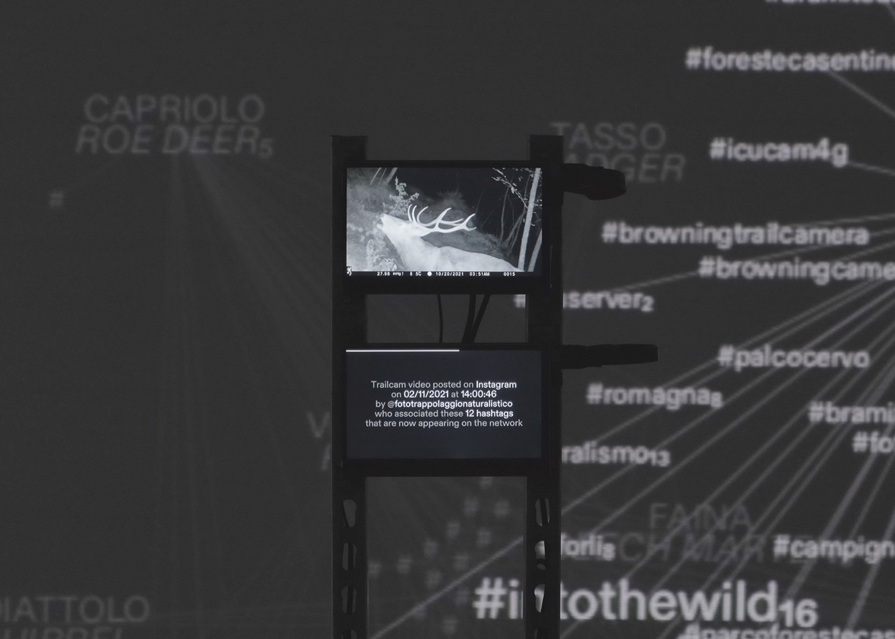
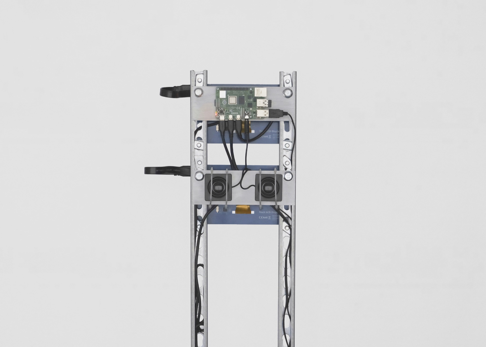
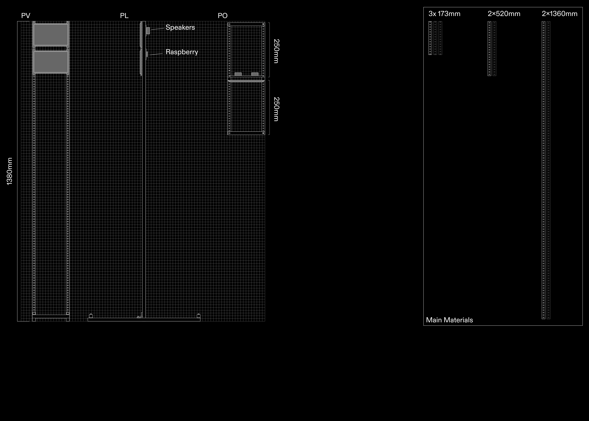

2025
Trail cams are video cameras triggered by the movement of animals in
their natural habitats. Initially designed for research and wildlife
monitoring, they have since become popular content on social media
platforms.
The installation investigates how animals, inadvertently turned into
digital entities, inhabit the online ecosystem—an environment
categorized by humans for human consumption.
The project examines 273 trail cam videos shared on major Italian
social platforms between 2021 and 2024. The hashtags used at the
time of publication establish connections between them. The
installation presents the videos in chronological order, alongside
their associated hashtags, forming a growing network that reflects
the evolution of a digital forest—merging human perceptions with
animal presence over time.
Field
Information design
Data vizualization
Spatial
design
Team
Miguel Ernesto Amaya
Federico Gajo
Giacomo Garetto
Francesco Scarfone
Emanuel Simionato
Exhibited at
Meet Digital Culture Center, Milan


